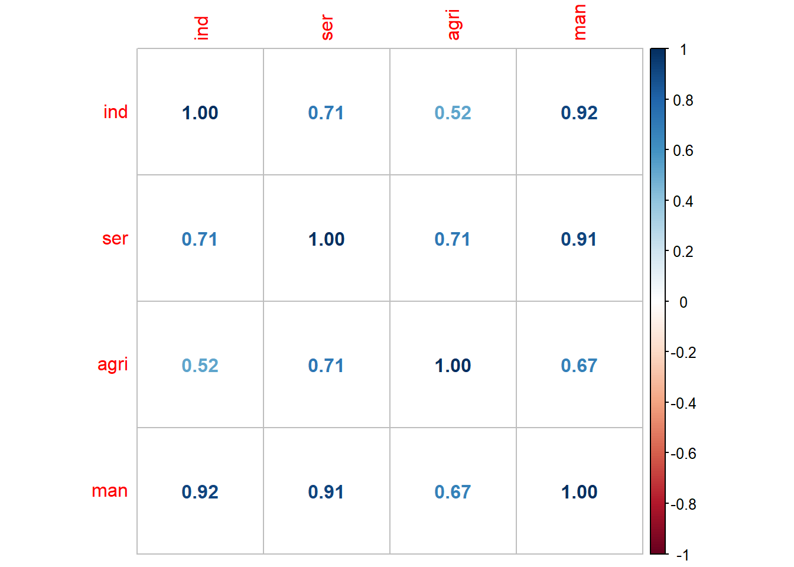

#limpar ambiente
rm(list = ls())
# carregar bibliotecas necessárias
library(readxl)
library(tidyverse)
#importar dados
m_reg <- read_excel("m_reg.xlsx")Avaliação dos Modelos de Regressão
Para da significância estatística dos coeficientes e do modelo existem outros testes para assegurar a validade dos resultados. Existem testes de diagnóstico ao erros (heterocedasticidade, autocorrelação, normalidade), ao modelo (especificação), às variáveis (multicolinearidade), à estabilidade (estabilidade dos coeficientes e do modelo). Além disso, existem critérios para comparar modelos alternativos (R², AIC, BIC), métodos de selecção de modelos (stepwise, validação cruzada) e técnicas para identificar observações influentes.
Diagnóstico da Multicolinearidade
Existem várias formas de detectar a multicolinearidade entre as variáveis independentes num modelo de regressão. Vamos utilizar os dados do ficheiro m_reg.xlsx. O ficheiro pode ser descarregado em https://github.com/tiagolafonso/Files_Intro_Applied_Econometrics. Os dados foram recolhidos no World Development Indicators e contêm as seguintes variáveis:
| Código | Descrição |
|---|---|
| gdp | PIB (preços constantes, moeda local) |
| air | Transporte aéreo, passageiros transportados |
| rail | Transporte ferroviário, passageiros transportados (milhões de passageiros) |
| agri | Agricultura, silvicultura e pesca, valor acrescentado (preços constantes, moeda local) |
| ind | Indústria (incluindo construção), valor acrescentado (preços constantes, moeda local) |
| man | Indústria transformadora, valor acrescentado (preços constantes, moeda local) |
| ser | Serviços, valor acrescentado (preços constantes, moeda local) |
| x | Exportações de bens e serviços (preços constantes, moeda local) |
| m | Importações de bens e serviços (preços constantes, moeda local) |
| gfcf | Formação bruta de capital fixo (preços constantes, moeda local) |
Importar os dados para o R:
Neste exemplo, vamos analisar a multicolinearidade para as variáveis independentes para o modelo:
\[ gdp_t=\beta_0 + \beta_1 ind_t + \beta_2 ser_t + \beta_3 agri_t + \beta_4 man_t + \mu_t \tag{1}\]
Análise gráfica
Para a análise gráfico podemos fazer de duas formas: através de um gráfico de dispersão entre duas variáveis, ou através de dois gráficos de linhas comparando as séries temporais das variáveis.
O grafíco de dispersão entre duas variáveis pode ser feito com a função ggplot(). Para este exemplo camos comparar a variável man com a ind:
ggplot(m_reg, aes(x = man, y = ind)) +
geom_point(alpha = 0.7, color = "steelblue", size = 2.5) +
labs(title = "Gráfico de Dispersão: man vs ind",
x = "Indústria Transformadora",
y = "Indústria") +
theme_minimal() + #tema para o gráfico
theme(plot.title = element_text(size = 14, face = "bold", hjust = 0.5),
plot.subtitle = element_text(size = 12, hjust = 0.5, color = "gray50"),
axis.title = element_text(size = 12),
panel.grid.minor = element_blank())Através do gráfico de dispersão, podemos observar a relação entre as variáveis man e ind, o que pode indicar a presença de multicolinearidade imperfeita. Pois parece existe uma relação linear entre as duas variáveis (é possível fazer uma regressão linear bem ajustada para representar as observações). Se não fosse possível fazer uma regressão linear bem ajustada, poderíamos considerar que não há multicolinearidade entre as duas variáveis.
Para o gráfico de linhas:
# Criar dados para o gráfico
dados_graf <- data.frame(
tempo = 1:nrow(m_reg),
man = m_reg$man,
ind = m_reg$ind
)
# Gráfico combinado
ggplot(dados_graf, aes(x = tempo)) +
geom_line(aes(y = man, color = "Indústria Transformadora"), size = 1.2) +
geom_line(aes(y = ind, color = "Indústria"), size = 1.2) +
scale_color_manual(values = c("Indústria Transformadora" = "steelblue",
"Indústria" = "red")) +
labs(title = "Comparação das Séries Temporais: man vs ind",
x = "Tempo",
y = "Valor",
color = "Variáveis") +
theme_minimal() +
theme(legend.position = "bottom")Warning: Using `size` aesthetic for lines was deprecated in ggplot2 3.4.0.
ℹ Please use `linewidth` instead.O comportamento das séries ao longo do tempo é muito semelhantes, o que pode indicar a presença de multicolinearidade imperfeita.
Matriz das correlações
Outra forma de detetar a multicolinearidade é através da matriz de correlação. A matriz de correlação mostra o grau de associação linear entre as variáveis. Cada valor na matriz varia entre -1 e 1, onde valores próximos de 1 ou -1 indicam uma forte correlação, o que pode indicar a presença de multicolinearidade.
Para a matriz de correlação, podemos utilizar a função cor() do R. Vamos calcular a matriz de correlação para as variáveis de interesse do conjunto de dados m_reg.
# selecionar variáveis de interesse
mreg_sel <- m_reg %>%
select(ind, ser, agri, man)
# Matriz de correlação
cor_matrix <- cor(mreg_sel)
cor_matrix ind ser agri man
ind 1.0000000 0.7093591 0.5217541 0.9155984
ser 0.7093591 1.0000000 0.7109302 0.9103241
agri 0.5217541 0.7109302 1.0000000 0.6737959
man 0.9155984 0.9103241 0.6737959 1.0000000Onde podemos ver que as variáveis ind e man têm uma correlação alta, o que pode indicar a presença de multicolinearidade. Nas restantes a correlação não é assim tão elevada.
Também podemos criar uma matriz gráfica com o package corrplot. Informações detalhadas sobre esta biblioteca podem ser encontradas em An Introduction to corrplot Package.
library(corrplot)corrplot 0.95 loaded#com números
cor_1 <- corrplot(cor_matrix, method = "number")
#com círculos
cor_2 <- corrplot(cor_matrix, method = "circle")#com números e circulos
cor_3 <- corrplot.mixed(cor_matrix)Regressão
O primeiro passo é estimar o modelo de regressão com as variáveis independentes para Equation 1:
modelo_multi <- lm(gdp ~ ind + ser + agri + man, data = m_reg)
summary(modelo_multi)
Call:
lm(formula = gdp ~ ind + ser + agri + man, data = m_reg)
Residuals:
Min 1Q Median 3Q Max
-1.222e+10 -3.659e+09 3.956e+08 3.477e+09 1.778e+10
Coefficients:
Estimate Std. Error t value Pr(>|t|)
(Intercept) 7.293e+10 2.724e+10 2.678 0.0137 *
ind 1.619e+00 1.868e-01 8.665 1.53e-08 ***
ser 1.396e+00 2.647e-02 52.754 < 2e-16 ***
agri -5.464e-01 8.305e-01 -0.658 0.5174
man -3.940e-01 4.227e-01 -0.932 0.3615
---
Signif. codes: 0 '***' 0.001 '**' 0.01 '*' 0.05 '.' 0.1 ' ' 1
Residual standard error: 6.563e+09 on 22 degrees of freedom
Multiple R-squared: 0.9995, Adjusted R-squared: 0.9994
F-statistic: 1.112e+04 on 4 and 22 DF, p-value: < 2.2e-16No resultado anterior temos 2 de 4 variáveis que não são estatisticamente diferentes de 0 (agri,man`), contudo o modelo tem um R² ajustado muito elevado (0.99), o que pode indicar a presença de multicolinearidade. Neste caso não conseguimos determinar quais as variáveis que estão a causar este problema.
Regressão entre variáveis independentes
Este método consiste em estimar a regressão entre duas das variáveis independentes, ou seja, estimar a regressão do método de deteção de multicolinearidade pelo gráfico de dispersão. Quais as variáveis que devemos escolher neste caso? Com já temos uma anáilise de correlações e gráfica, já sabemos quais as que devemos testar. Caso contrário teríamos que fazer várias regressões com duas das variáveis independentes de cada vez. Para a regressão:
\[ man_t = \beta_0 + \beta_1 ind_t + \epsilon_t \]
No R:
modelo_ind <- lm(man ~ ind - 1, data = m_reg)
summary(modelo_ind)
Call:
lm(formula = man ~ ind - 1, data = m_reg)
Residuals:
Min 1Q Median 3Q Max
-1.420e+10 -6.354e+09 -4.233e+09 7.569e+09 1.409e+10
Coefficients:
Estimate Std. Error t value Pr(>|t|)
ind 0.565867 0.004297 131.7 <2e-16 ***
---
Signif. codes: 0 '***' 0.001 '**' 0.01 '*' 0.05 '.' 0.1 ' ' 1
Residual standard error: 8.529e+09 on 26 degrees of freedom
Multiple R-squared: 0.9985, Adjusted R-squared: 0.9984
F-statistic: 1.734e+04 on 1 and 26 DF, p-value: < 2.2e-16O R² é muito elevado (0.999), o que indica a presença de multicolinearidade entre as variáveis man e ind. O que indique que a variação de man pode ser explicada em grande parte pela variação de ind.
em que graficamente:
ggplot(m_reg, aes(x = ind, y = man)) +
geom_point(alpha = 0.7, color = "steelblue", size = 5.5) +
geom_smooth(method = "lm",
formula = y ~ x - 1,
color = "red", se = FALSE,
alpha = 0.2) +
labs(title = "Regressão Linear: Indústria vs Indústria Transformadora",
x = "Indústria (ind)",
y = "Indústria Transformadora (man)") +
theme_minimal() + #tema para o gráfico
theme(plot.title = element_text(size = 14, face = "bold", hjust = 0.5),
axis.title = element_text(size = 12),
panel.grid.minor = element_blank())A conclusão permance, suspeitamos que existe multicolinearidade imperfeita entre estas duas variáveis. També poderíamos inverter a variável dependente pela independente:
modelo_ind_inv <- lm(ind ~ man - 1, data = m_reg)
summary(modelo_ind_inv)
Call:
lm(formula = ind ~ man - 1, data = m_reg)
Residuals:
Min 1Q Median 3Q Max
-2.425e+10 -1.278e+10 8.000e+09 1.181e+10 2.554e+10
Coefficients:
Estimate Std. Error t value Pr(>|t|)
man 1.7646 0.0134 131.7 <2e-16 ***
---
Signif. codes: 0 '***' 0.001 '**' 0.01 '*' 0.05 '.' 0.1 ' ' 1
Residual standard error: 1.506e+10 on 26 degrees of freedom
Multiple R-squared: 0.9985, Adjusted R-squared: 0.9984
F-statistic: 1.734e+04 on 1 and 26 DF, p-value: < 2.2e-16Em que podemos observar a mesma conclusão.
Teste VIF
Por último o teste VIF que é o mais utilizado em econometria. O teste VIF consiste em calcular para cada uma das variáveis independentes quanto a variância de um coeficiente da regressão é inflacionada devido à presença de multicolinearidade. O VIF é dado por:
\[ VIF_i = \frac{1}{1 - R^2_i} \tag{2}\]
em que \(R^2_i\) é o coeficiente de determinação da regressão da variável \(X_i\) em função das restantes variáveis independentes. Para a equação Equation 1 (objeto modelo_multi) vamos estimar a regressão de cada variável independente em função das restantes:
modelo_multi_ind <- lm(ind ~ ser + agri + man,
data = m_reg)
modelo_multi_ser <- lm(ser ~ ind + agri + man,
data = m_reg)
modelo_multi_agri <- lm(agri ~ ind + ser + man,
data = m_reg)
modelo_multi_man <- lm(man ~ ind + ser + agri,
data = m_reg)Agora vamos extrair o R^2 de cada uma das regressões ($r.squared) e calcular o VIF com a Equation 2:
# Extrair R²
r2_ind <- summary(modelo_multi_ind)$r.squared
r2_ser <- summary(modelo_multi_ser)$r.squared
r2_agri <- summary(modelo_multi_agri)$r.squared
r2_man <- summary(modelo_multi_man)$r.squared
# Calcular VIF
vif_ind <- 1 / (1 - r2_ind)
vif_ser <- 1 / (1 - r2_ser)
vif_agri <- 1 / (1 - r2_agri)
vif_man <- 1 / (1 - r2_man)
#mostrar o VIF
vif_values <- data.frame(
Variable = c("Indústria",
"Serviços",
"Agricultura",
"Indústria Transformadora"),
VIF = c(vif_ind, vif_ser, vif_agri, vif_man)
)
print(vif_values) Variable VIF
1 Indústria 14.182238
2 Serviços 13.372233
3 Agricultura 2.074316
4 Indústria Transformadora 41.424816Em alternativa, e esta bem mais prática, podemos usar a função vif() da biblioteca car:
library(car)Loading required package: carData
Attaching package: 'car'The following object is masked from 'package:dplyr':
recodeThe following object is masked from 'package:purrr':
somevif(modelo_multi) ind ser agri man
14.182238 13.372233 2.074316 41.424816 A biblioteca performance pode ser utilizada para calcular o VIF e outras métricas para uma análise de colinearidade mais informativa. Para isso recorremos à função check_collinearity().
library(performance)
check_collinearity(modelo_multi)# Check for Multicollinearity
Low Correlation
Term VIF VIF 95% CI adj. VIF Tolerance Tolerance 95% CI
agri 2.07 [ 1.47, 3.43] 1.44 0.48 [0.29, 0.68]
High Correlation
Term VIF VIF 95% CI adj. VIF Tolerance Tolerance 95% CI
ind 14.18 [ 8.39, 24.50] 3.77 0.07 [0.04, 0.12]
ser 13.37 [ 7.93, 23.09] 3.66 0.07 [0.04, 0.13]
man 41.42 [24.00, 72.05] 6.44 0.02 [0.01, 0.04]Esta função (mais info ?check_collinearity) fornece uma visão geral da colinearidade entre as variáveis independentes. Separa as variáveis em grupos com base na sua colinearidade (baixa e alta). apresenta também o Intervalo de confiança para o VIF (VIF 95% CI). Apresenta mais duas métricas como a Increased SE que indica o aumento percentual do erro padrão do coeficiente devido à colinearidade, e a Tolerance que é o inverso do VIF (1/VIF). Análise para a variável man:
Increased SE:6.44 - 6.44 vezes maior que o desvio padrão esperado para o coeficienteTolerance:0.02 - Indica que apenas 2% da variância é independente
Portanto, podemos concluir que existe uma forte multicolinearidade.
Diagnóstico da Heterocedasticidade
Para esta aplicação vamos utilizar o conjunto de dados hprice1 da biblioteca wooldridge.
# Carregar bibliotecas necessárias
library(wooldridge)
library(tidyverse)
# Carregar dados
data("hprice1")A heterocedasticidade é medida nos erros. Para isso, vamos utilizar o modelo base (modelo_0) e obter os resíduos u_i:
#estimar modelo
modelo_0 <- lm(price ~ lotsize + sqrft + bdrms,
data = hprice1)
# armazenar erro no data frame
hprice1$u_i <- residuals(modelo_0)
summary(hprice1$u_i) #eststistica descritiva do erro Min. 1st Qu. Median Mean 3rd Qu. Max.
-120.026 -38.530 -6.555 0.000 32.323 209.376 Graficamente
Para testar a heterocedasticidade graficamente, podemos utilizar um gráfico de dispersão dos resíduos em relação aos valores ajustados ou com outra variável independente. Se os resíduos apresentarem um padrão específico (como um funil ou uma curva), pode indicar a presença de heterocedasticidade dos erros.
# Gráfico de dispersão dos resíduos
ggplot(hprice1, aes(x = fitted(modelo_0), y = u_i)) +
geom_point(alpha = 0.7, color = "steelblue", size = 2.5) +
geom_hline(yintercept = 0, linetype = "dashed", color = "red") +
labs(title = "Gráfico de Resíduos vs Valores Ajustados",
x = "Valores Ajustados",
y = "Resíduos") +
theme_minimal() +
theme(plot.title = element_text(size = 14, face = "bold", hjust = 0.5),
axis.title = element_text(size = 12),
panel.grid.minor = element_blank())Testes formais
Teste de Breusch-Pagan
Um dos testes mais utilizado para testar a heterocedasticidade é o teste de Breusch-Pagan [@breusch_simple_1979]. Os testes têm um processo semelhante como referido na secção de pressupostos de homocedasticidade do capítulo anterior. A regressão auxiliar do teste é dada por:
\[ {\mu_i}^2 = \delta_0 + \delta_1 lotsize_i + \delta_2 sqrft_i + \delta_3 bdrms_i + \sigma_i \]
Depois de estimar vamos obter o \(LM_{stat}=n*R^2\) e calcular o valor da probabilidade do \(\chi^2\).
No R:
#calcular u_i^2
hprice1$u_i2 <- hprice1$u_i^2
#Estimar reg-bp
reg_bp <- lm(u_i2 ~ lotsize + sqrft + bdrms, data = hprice1)
#Obter R2
r2_bp <- summary(reg_bp)$r.squared
# Obter n
n <- nrow(hprice1)
# Número de variáveis independentes - k
k <- reg_bp$rank - 1
# LM stat
LM_stat_bp <- n * r2_bp
#Obter valor P
library(lmtest)Loading required package: zoo
Attaching package: 'zoo'The following objects are masked from 'package:base':
as.Date, as.Date.numericp_value_bp <- 1 - pchisq(LM_stat_bp, df = k)
p_value_bp[1] 0.00278206O $r.squared extrai o valor de R² da regressão auxiliar, que é utilizado para calcular o estatístico LM do teste de Breusch-Pagan. O $rank devolve o número de coeficientes (-1 para excluis a constante). A função pchisq() é utilizada para calcular o valor p associado ao estatístico LM, com base na distribuição qui-quadrado, onde df é o número de variáveis independentes na regressão auxiliar (k). Este processo pode ser mais trabalhoso, mas é possível executar qualquer test de heterocedasticidade.
A biblioteca skedastic tem várias funções para testar a heterocedasticidade. Neste caso, o teste de Breusch-Pagan pode ser obtido com a função breusch_pagan():
library(skedastic)
breusch_pagan(modelo_0)# A tibble: 1 × 5
statistic p.value parameter method alternative
<dbl> <dbl> <dbl> <chr> <chr>
1 14.1 0.00278 3 Koenker (studentised) greater A conclusão (o valor de P é o mesmo) é que a hipótese nula é rejeitada para qualquer nível de significância estatística. Em que a hipótese nula do teste de heterocedasticidade é: os erros são homocedásticos.
Teste de Glesjer
O teste de Glesjer [@glejser_new_1969] tem como a regressão auxiliar:
\[ |\mu_i| = \delta_0 + \delta_1 \cdot lotsize_i + \delta_2 \cdot sqrft_i + \delta_3 \cdot bdrms_i + \sigma_i \tag{3}\]
O processo é semelhante ao teste de Breusch-Pagan. No R:
# Calcular |u_i|
hprice1$u_i_abs <- abs(hprice1$u_i)
# Estimar reg-glesjer
reg_glesjer <- lm(u_i_abs ~ lotsize + sqrft + bdrms,
data = hprice1)
# Obter R2
r2_glesjer <- summary(reg_glesjer)$r.squared
# Obter n
n <- nrow(hprice1)
# Número de variáveis independentes - k
k <- reg_glesjer$rank - 1
# LM stat
LM_stat_glesjer <- n * r2_glesjer
# Obter valor P
library(lmtest)
p_value_glesjer <- 1 - pchisq(LM_stat_glesjer,
df = k)
p_value_glesjer[1] 0.0004458974O mesmo resultado pode ser obtido utilizando a função gl() da biblioteca skedastic. A hipótese nula é rejeitada para qualquer nível de significância estatística.
Teste de Harvey-Godfrey
O teste Harvey-Godfrey [@harvey_estimating_1976, @godfrey_testing_1978] tem como regressão auxiliar:
\[ ln(\mu_i^2) = \delta_0 + \delta_1 lotsize_i + \delta_2 sqrft_i + \delta_3 bdrms_i + \sigma_i \tag{4}\]
O processo é semelhante a qualquer LM teste para heterocedasticidade. Tabém pode ser obtido utilizando a função harvey_godfrey() da biblioteca skedastic:
harvey(modelo_0)# A tibble: 1 × 4
statistic p.value parameter alternative
<dbl> <dbl> <dbl> <chr>
1 8.49 0.0370 3 greater Neste caso a hipótese nula é rejeitada para 5% e 10% de significância estatística.
Teste de Park
O teste de Park [@park_estimation_1966] tem como regressão auxiliar:
\[ ln(\mu_i^2) = \delta_0 + \delta_1 ln(lotsize_i) + \delta_2 ln(sqrft_i) + \delta_3 ln(bdrms_i) + \sigma_i \tag{5}\]
A bibliotca skedastic não tem o teste de Park. Este é um dos exemplos em que temos que fazer o processo passo a passo:
# Calcular ln(u_i^2)
hprice1$ln_u_i2 <- log(hprice1$u_i^2)
# Estimar regressão auxiliar
reg_park <- lm(ln_u_i2 ~ log(lotsize) + log(sqrft) + log(bdrms),
data = hprice1)
# Obter R2
r2_park <- summary(reg_park)$r.squared
# Obter n
n <- nrow(hprice1)
# Número de variáveis independentes - k
k <- reg_park$rank - 1
# LM stat
LM_stat_park <- n * r2_park
# Obter valor P
library(lmtest)
p_value_park <- 1 - pchisq(LM_stat_park, df = k)
p_value_park[1] 0.1142573A hipótese nula de homocedasticidade não é rejeitada para nenhum nível de significância estatística.
Teste de White
O teste de White [@white_heteroskedasticity-consistent_1980] é um teste geral para heterocedasticidade que não assume uma forma específica de heterocedasticidade. A regressão auxiliar do teste de White inclui as variáveis independentes e os termos quadráticos:
\[ \begin{split} {\mu_i}^2 = \delta_0 & + \delta_1 lotsize_i + \delta_2 sqrft_i + \delta_3 bdrms_i \\ &+ \delta_4 lotsize_i^2 + \delta_5 sqrft_i^2 + \delta_6 bdrms_i^2 + \sigma_i \end{split} \tag{6}\]
e pode incluir também interações entre as variáveis independentes :
\[ \begin{split} {\mu_i}^2 = \delta_0 &+ \delta_1 lotsize_i + \delta_2 sqrft_i + \delta_3 bdrms_i \\ &+ \delta_4 lotsize_i^2 + \delta_5 sqrft_i^2 + \delta_6 bdrms_i^2 \\ &+ \delta_7 (lotsize_i \cdot sqrft_i) + \delta_8 (lotsize_i \cdot bdrms_i) \\ &+ \delta_9 (sqrft_i \cdot bdrms_i) + \sigma_i \end{split} \tag{7}\]
Para a Equation 6 podemos utilizar a função white() da biblioteca skedastic:
white(modelo_0)# A tibble: 1 × 5
statistic p.value parameter method alternative
<dbl> <dbl> <dbl> <chr> <chr>
1 20.6 0.00216 6 White's Test greater e para a Equation 7 podemos utilizar a função white() com o argumento interactions = TRUE:
white(modelo_0, interactions = TRUE)# A tibble: 1 × 5
statistic p.value parameter method alternative
<dbl> <dbl> <dbl> <chr> <chr>
1 33.7 0.0000995 9 White's Test greater Para qualquer uma das variações do teste, a hipótese nula é rejeitada para todos os níveis de significância estatística.
Teste de ARCH
O teste de ARCH [@engle_autoregressive_1982] pode ser utilizado para detectar a presença de heterocedasticidade condicional, especialmente em séries temporais. A regressão auxiliar do teste de ARCH é dada por:
Para este exemplo vamo utilizar os dados do ficheiro m_reg.xlsx.
library(readxl)
m_reg <- read_excel("m_reg.xlsx")Estimar o modelo de regressão:
modelo_0 <- lm(gdp ~ ind + ser + agri + man, data = m_reg)Para executar o teste de ARCH utilizado a função ArchTest() da biblioteca FinTS:
library(FinTS)
teste_arch <- ArchTest(residuals(modelo_0), lags = 1)
teste_arch
ARCH LM-test; Null hypothesis: no ARCH effects
data: residuals(modelo_0)
Chi-squared = 2.6047, df = 1, p-value = 0.1065O argumento lags especifica o número de defasamentos do teste, ou seja, a ordem do modelo ARCH a ser testada. Para a ordem 1, existe heterocedasticidade para qualquer nível de significância estatística (valor P < 0.01). Em que a hipótese nula do teste é: não existem efeitos ARCH para a ordem 1.
outros testes
A biblioteca skedastic oferece uma variedade de outros testes para heterocedasticidade, para mais testes:
library(skedastic)
ls("package:skedastic") [1] "alvm.fit" "anlvm.fit" "anscombe"
[4] "avm.ci" "avm.fwls" "avm.vcov"
[7] "bamset" "bickel" "blus"
[10] "bootlm" "breusch_pagan" "carapeto_holt"
[13] "cook_weisberg" "countpeaks" "dDtrend"
[16] "diblasi_bowman" "dpeak" "dpeakdat"
[19] "dufour_etal" "evans_king" "glejser"
[22] "godfrey_orme" "goldfeld_quandt" "GSS"
[25] "harrison_mccabe" "harvey" "hccme"
[28] "hetplot" "honda" "horn"
[31] "li_yao" "pDtrend" "ppeak"
[34] "pRQF" "rackauskas_zuokas" "simonoff_tsai"
[37] "szroeter" "T_alpha" "twosidedpval"
[40] "verbyla" "white" "wilcox_keselman"
[43] "yuce" "zhou_etal" A biblioteca performance oferece funções para avaliar o desempenho de modelos de regressão, incluindo testes de heterocedasticidade, como a check_heteroscedasticity():
library(performance)
check_heteroscedasticity(modelo_0)OK: Error variance appears to be homoscedastic (p = 0.145).Esta função realiza o teste de Breusch-Pagan LM e fornece até uma resposta visual.
Diagnóstico da Autocorrelação dos erros
Nesta aplicação vamos utilizar os dados do exemplos anterior (ficheiro m_reg.xlsx) e estimar o modelo:
#carregar bibliotecas
library(readxl)
library(tidyverse)
library(performance)
#carregar dados
m_reg <- read_excel("m_reg.xlsx")
#estimar modelo
modelo <- lm(gdp ~ ind + ser + agri + man, data = m_reg)Gráfico
A forma informal de detetar a heterocedaticide é através de um gráfico de dispersão dos resíduos e dos resíduos desfasados do modelo. Para isso é necessário o obter os resíduos (u_t) do modelo e os resíduos desfasados (u_t1). No R:
m_reg <- m_reg |>
mutate(
u_t = residuals(modelo),
u_t1 = lag(u_t))Gráfico de dispersão dos resíduos com ggplot():
library(ggplot2)
#| label: grafico_residuos_autocorr
ggplot(m_reg, aes(x = u_t1, y = u_t)) +
geom_point(alpha = 0.7, color = "steelblue", size = 5) +
geom_smooth(method = "lm", se = FALSE, color = "red") +
labs(title = "Gráfico de Dispersão dos Resíduos vs Resíduos Desfasados",
x = "Resíduos Desfasados (u_t-1)",
y = "Resíduos (u_t)") +
theme_minimal() +
theme(plot.title = element_text(size = 14, face = "bold", hjust = 0.5),
axis.title = element_text(size = 12),
panel.grid.minor = element_blank())`geom_smooth()` using formula = 'y ~ x'Warning: Removed 1 row containing non-finite outside the scale range
(`stat_smooth()`).Warning: Removed 1 row containing missing values or values outside the scale range
(`geom_point()`).Através do gráfico podemos que existe autocorrelação nos resíduos.
Teste de Durbin-Watson
O teste de Durbin-Watson (DW) [@durbin_testing_1950; @durbin_testing_1951] pode ser utilizado para detectar a presença de autocorrelação nos resíduos de um modelo de regressão. O teste tem os seguintes pressupostos:
- O modelo tem constante
- Autocorrelação de 1ª ordem
- Não existe variável dependente desfasada com independente
O passo a passo para executar o teste de Durbin-Watson é o seguinte:
- Estimar o modelo e obter os resíduos.
- Calcular a estatística de DW
\[ DW_{stat} = \frac{\sum_{t=2}^{n} (u_t - u_{t-1})^2}{\sum_{t=1}^{n} u_t^2} \tag{8}\]
No R:
# Calcular numerador: soma de (u_t - u_{t-1})^2
numerador <- sum((m_reg$u_t[-1] - m_reg$u_t[-nrow(m_reg)])^2, na.rm = TRUE)
# Calcular denominador: soma de u_t^2
denominador <- sum(m_reg$u_t^2, na.rm = TRUE)
# Calcular estatística DW
DW_stat <- numerador / denominador
DW_stat[1] 1.262287O valor de \(DW_{stat}\) pode também ser obtido através da função dwtest() da biblioteca lmtest:
#|label: dw_test
library(lmtest)
dwtest(modelo)
Durbin-Watson test
data: modelo
DW = 1.2623, p-value = 0.004077
alternative hypothesis: true autocorrelation is greater than 0- Construir a tabela com o \(DW_{stat}\):
Onde:
\(d_I\) é a distância de Durbin-Watson inferior
\(d_S\) é a distância de Durbin-Watson superior.
Os limites para cada nível de significância podem ser obtidas em: Durbin-Watson Significance Tables
Em alternativa, é possivel calcular o \(DW_stat\) e obter diretamente o valor da probabilidade com a função dwtest() da biblioteca lmtest:
#|label: dw_test
library(lmtest)
dwtest(modelo)
Durbin-Watson test
data: modelo
DW = 1.2623, p-value = 0.004077
alternative hypothesis: true autocorrelation is greater than 0- Concluir (a hipótese nula é que não existe autocorrelação)
A hipótese nula do teste de DW é que não existe autocorrelação. Considerando o valor da probabilidade, a Hipótese nula é rejeitada para qualquer nível de significância estatística.
A biblioteca performance também tem a função check_autocorrelation() que pode ser utilizada para testar a autocorrelação dos resíduos:
#|label: performance_check_autocorrelation
library(performance)
check_autocorrelation(modelo)Warning: Autocorrelated residuals detected (p = 0.010).O teste DW tem algumas limitações, já mencionadas nos pressupostos. Tem ainda também a limitação de o \(DW_stat\) ficar nas zonas de indecisão e com isto não ser conclusivo. Existe também o teste Durbin h-H (DH) que é uma extensão do teste DW e que pode ser utilizado quando a variável dependente é defasada. O teste DH não é tão utilizado como o DW.
Teste de Breusch-Godfrey
O teste de Breusch-Godfrey [@breusch_auto_1978; @godfrey_testing_1978] tem vantagem de poder ser utilizado para detetar autocorrelação de ordens superiores a 1. O teste tem como base a equação:
\[ \begin{split} gdp_t = \beta_0 & + \beta_1 inf_t + \beta_2 ser_t+ \beta_3 agri_t + \beta_4 man_t + \mu_t \end{split} \tag{9}\]
onde:
\[ \mu_t = \rho_1 \mu_{t-1} + \rho_2 \mu_{t-2} + ... + \rho_p \mu_{t-p} + \epsilon_t \tag{10}\]
onde \(p\) é a ordem de autocorrelação a ser testada.
Portanto, a H0: \(\rho_1 = rho_2 = ... = rho_p = 0\) (não existe autocorrelação) Enquanto que a H1: pelo menos um \(\rho_i \neq 0\) (existe autocorrelação). O teste é feito com o modelo LM (ou seja Equation 9 e a Equation 10) em que o \(LM_{stat} = (n-\rho)R^2\) e o valor de P é obtido através da distribuição \(\chi^2\). O teste pode ser calculado de forma conveniente com a função bgtest():
#|label: bg_test
library(lmtest)
#odem 1
bgtest(modelo)
Breusch-Godfrey test for serial correlation of order up to 1
data: modelo
LM test = 1.0179, df = 1, p-value = 0.313#ordem 2
bgtest(modelo, order = 2, type = "Chisq")
Breusch-Godfrey test for serial correlation of order up to 2
data: modelo
LM test = 1.0368, df = 2, p-value = 0.5955O primeiro argumento da função é objeto do modelo. Existem mais alguns argumentos que são necessários order (a ordem da autocorrelação a ser testada) e type (o tipo de teste a ser realizado, como Chisq ou F). Por defeito, o argumento order é 1 e o argumento type é Chisq. A hipótese nula é rejeitada para qualquer nível de significância estatística.
Segundo o resultado do teste, a hipótese nula não foi rejeitada, o que indique que não existe autocorrelação de ordem 1 nem ordem 2.
Diagnóstico da Normalidade
Tal como os diagnósticos anteriores, este também pode ser feito através de gráficos e de testes estatísticos. Para esta aplicação vamos utilizar o modelo anterior.
#carregar bibliotecas
library(readxl)
library(tidyverse)
library(performance)
#carregar dados
m_reg <- read_excel("m_reg.xlsx")
#estimar modelo
modelo <- lm(gdp ~ ind + ser + agri + man, data = m_reg)
#obter erro
m_reg$residuos <- residuals(modelo)Histograma
Para o gráfico de histograma dos resíduos e comparar com a linha de normalidade:
library(ggplot2)
ggplot(m_reg, aes(x = residuos)) +
geom_histogram(aes(y = after_stat(density)),
bins = 30, fill = "steelblue",
color = "black", alpha = 0.7) +
stat_function(fun = dnorm,
args = list(mean = mean(m_reg$residuos),
sd = sd(m_reg$residuos)),
color = "red", size = 1.2) +
labs(title = "Histograma dos Resíduos com Curva Normal",
x = "Resíduos",
y = "Densidade") +
theme_minimal()Utilizando exclusivamente a biblioteca o histograma dos resíduos podemos concluir que aparentemente os resíduos seguem uma distribuição normal. É perfeitamente normal em amostras pequenas haver desvios (barras) em relação à distribuição normal (linha vermelha)
Teste de Shapiro-Wilk
O teste de @shapiro_analysis_1965 (SW) é um dos testes mais utilizados para testar a normalidade dos resíduos. A hipótese nula é que os resíduos seguem uma distribuição normal. O teste pode ser realizado com a função shapiro.test():
shapiro.test(m_reg$residuos)
Shapiro-Wilk normality test
data: m_reg$residuos
W = 0.96487, p-value = 0.4735A H0 não é rejeitada para qualquer nível de significância estatística. O W é a estatística do teste. O teste SW tem um grande poder estatístico em detetar desvios em relação à normalidade, pois é muit sensível a desvios tanto no centro como nas caudas da distribuição.
A função check_normality() da biblioteca performance tabém realizado o teste SW:
library(performance)
check_normality(modelo)OK: residuals appear as normally distributed (p = 0.258).Teste de Jarque Bera
O teste de @jarque_test_1987 (JB) é outro teste muito utilizado para verificar a normalidade dos resíduos. A hipótese nula é a mesma do teste SW. O teste pode ser realizado com a função jarque.test() da biblioteca moments.
#carregar biblioteca
library(moments)
#teste de normalidade
jarque.test(m_reg$residuos)
Jarque-Bera Normality Test
data: m_reg$residuos
JB = 3.3251, p-value = 0.1897
alternative hypothesis: greaterComo H0 não é rejeitada, os erros seguem uma distribuição normal. Se H0 for rejeitada podemo obter os valores de curtose e assimetria para perceberem a razão dos resíduos não seguirem uma distribuição normal:
#Kurtosis (achatamento)
kurtosis(m_reg$residuos)[1] 4.288396#Skewnedd (assimetria)
skewness(m_reg$residuos)[1] 0.5691352Testes de Especificação e Estabilidade
Avaliar a Especificação
A especificação de um modelo de regressão está relacionada com a inclusão de variáveis (Overfitting) que não são relevantes e a exclusão de variáveis relevantes (Underfitting).
A não inclusão de variáveis relevantes pode levar a um modelo mal especificado, em que o valor esperado do resíduos \(E[\mu_i|X_i] \neq 0\), o que faz com que essa variável (omitida) seja confundida com o erro. Já a inclusão de variáveis irrelevantes pode levar a um modelo com excesso de ajustamento, em que o valor esperado do resíduos \(E[\mu_i|X_i] = 0\), mas a inclusão de variáveis desnecessárias (com informação redundante) pode aumentar a variância dos estimadores.
Para este exemplo vamos utilizar os dados wage2 da biblioteca wooldridge:
library(wooldridge)
data("wage2")Para ver a definição das variáveis executar ?wage2.
Vamos estimar o seguinte modelo: \[ wage_i = \beta_0 + \beta_1 educ_i + \beta_2 exper_i + \beta_3 tenure_i + \mu_i \tag{11}\]
e o modelo sem a variável tenure:
\[ wage_i = \beta_0 + \beta_1 educ_i + \beta_2 exper_i + \mu_i \tag{12}\]
No R:
modelo_completo <- lm(wage ~ educ + exper + tenure, data = wage2)
modelo_restrito <- lm(wage ~ educ + exper, data = wage2)
#comparar os modelos
library(stargazer)
Please cite as: Hlavac, Marek (2022). stargazer: Well-Formatted Regression and Summary Statistics Tables. R package version 5.2.3. https://CRAN.R-project.org/package=stargazer stargazer::stargazer(modelo_completo, modelo_restrito, type = "text")
===================================================================
Dependent variable:
-----------------------------------------------
wage
(1) (2)
-------------------------------------------------------------------
educ 74.415*** 76.216***
(6.287) (6.297)
exper 14.892*** 17.638***
(3.253) (3.162)
tenure 8.257***
(2.498)
Constant -276.240*** -272.528**
(106.702) (107.263)
-------------------------------------------------------------------
Observations 935 935
R2 0.146 0.136
Adjusted R2 0.143 0.134
Residual Std. Error 374.306 (df = 931) 376.295 (df = 932)
F Statistic 53.003*** (df = 3; 931) 73.260*** (df = 2; 932)
===================================================================
Note: *p<0.1; **p<0.05; ***p<0.01Ao comparar os dois modelos podemos ver que sinais dos coeficinets são consistentes e os valores muito semelhantes. A variável exper representa os anos de experiência profissional e a variável tenure representa os anos na empresa. Será que estas variáveis contém a mesma informação? Pos os anos de exper podem estar contabilizados nos anos de tenure. Para testar vamos utilizar a função waldtest da biblioteca lmtest:
library(lmtest)
waldtest(modelo_restrito, modelo_completo)Wald test
Model 1: wage ~ educ + exper
Model 2: wage ~ educ + exper + tenure
Res.Df Df F Pr(>F)
1 932
2 931 1 10.929 0.000983 ***
---
Signif. codes: 0 '***' 0.001 '**' 0.01 '*' 0.05 '.' 0.1 ' ' 1Para este caso, estamos a testar se a variável tenure pode ser omitida do modelo. E concluímos que a variável tenure é necessária, ou seja, a informação da variável vai para além da informação do nº de anos de experiência. Está acapturar efeitos como a lealdade do funcionário à empresa, aumento da produtividade ao longo do tempo, entre outros fatores. A variável exper representa apenas a experiência profissional (pode ser numa profissão totalmente diferente). O que nos pode levar a pensar que o modelo está mal especificado se omitirmos a variável tenure. Este resultado també nos pode fazer pensar se a variável exper é mesmo necessário, para despistar vamos fazer um modelo omitindo a variável exper e realziar o teste:
modelo_completo2 <- lm(wage ~ educ + exper + tenure, data = wage2)
modelo_restrito2 <- lm(wage ~ educ + tenure, data = wage2)
#comparar os modelos
library(stargazer)
stargazer::stargazer(modelo_completo2, modelo_restrito2, type = "text")
===================================================================
Dependent variable:
-----------------------------------------------
wage
(1) (2)
-------------------------------------------------------------------
educ 74.415*** 61.148***
(6.287) (5.639)
exper 14.892***
(3.253)
tenure 8.257*** 11.177***
(2.498) (2.441)
Constant -276.240*** 53.519
(106.702) (79.557)
-------------------------------------------------------------------
Observations 935 935
R2 0.146 0.127
Adjusted R2 0.143 0.125
Residual Std. Error 374.306 (df = 931) 378.293 (df = 932)
F Statistic 53.003*** (df = 3; 931) 67.579*** (df = 2; 932)
===================================================================
Note: *p<0.1; **p<0.05; ***p<0.01waldtest(modelo_restrito2, modelo_completo2)Wald test
Model 1: wage ~ educ + tenure
Model 2: wage ~ educ + exper + tenure
Res.Df Df F Pr(>F)
1 932
2 931 1 20.957 5.333e-06 ***
---
Signif. codes: 0 '***' 0.001 '**' 0.01 '*' 0.05 '.' 0.1 ' ' 1Concluímos que a variável exper também é necessária no modelo.
E está também relacionada com a forma funcional do modelo. Algumas formas funcionais são:
- Linear
`geom_smooth()` using formula = 'y ~ x'
\[ y_i=\beta_0+\beta_1x_{i}+\mu_i \tag{13}\]
\(\beta_0\): representa o valor esperado de \(y_i\) quando \(x_i=0\)
\(\beta_1\): um aumento de uma unidade em \(x_i\) está associado a um aumento de \(\beta_1\) unidades em \(y_i\), ceteris paribus.
- Linear - logarítmica

\[ y_i=\beta_0+\beta_1\ln(x_{i})+\mu_i \tag{14}\]
\(\beta_0\): representa o valor esperado de \(y_i\) quando \(ln(x_i)=0\) (ou seja, \(x_i=1\))
\(\beta_1\): um aumento de 1% em \(x_i\) está associado a um aumento de \(\frac{\beta_1}{100}\) unidades em \(y_i\), ceteris paribus.
- Logarítmica - linear
\[ \ln(y_i)=\beta_0+\beta_1x_{i}+\mu_i \tag{15}\]
\(\beta_0\): representa o valor esperado de \(ln(y_i)\) quando \(x_i=0\), para obter em ralação a \(y = e^{\beta_0}\), no R: exp(coef(modelo))["(Intercept)"].
\(\beta_1\): um aumento de uma unidade em \(x_i\) está associado a um aumento de \(\beta_1 \cdot 100\) % em \(y_i\), ceteris paribus.
- Logarítmica - logarítmica
\[ \ln(y_i)=\beta_0+\beta_1\ln(x_{i})+\mu_i \tag{16}\]
\(\beta_1\): um aumento de 1% em \(x_i\) está associado a um aumento de \(\beta_1\) % em \(y_i\), ceteris paribus.
- Exponencial
\[ y_i=\beta_0\beta_1^{x_i}\mu_i \]
com LN’s podemos linearizar a equação exponencial:
\[ \ln(y_i)=\ln(\beta_0)+\ln(\beta_1).x_i+\ln(\mu_i) \]
e estimar:
\[ \ln(y_i)=\beta'_0+\beta'_1x_i+\mu'_i \]
- Potência
\[ y_i=\beta_0X_i^{\beta_1}\mu_i \tag{17}\]
Com LN’s:
\[ ln(y_i)=ln(\beta_0)+\beta_1.ln(x_i)+ln(\mu_i) \tag{18}\]
para estimar: \[ ln(y_i)=\beta'_0+\beta_1 ln(x_i)+\mu'_i \tag{19}\]
- Polinomial
\[ y_i=\beta_0+\beta_1x_i+\beta_2x_i^{2}+\mu_i \tag{20}\]
para estimar:
\[ z_i=x'_i=x_i^2 \tag{21}\]
- Hiperbólica
\[ y_i=\beta_0+\beta_1\frac{1}x_i+\mu_i \tag{22}\]
para estimar:
\[ w_i=x'_i=\frac{1}x_i \tag{23}\]
Depois de linearizar, a interpretação da forma funcional é semelhante às lineares.
Teste de Ramsey RESET
O teste de Ramsey RESET [@ramsey_tests_1969] é utilizado para testar a especificação do modelo, nomeadamente se a forma funcional está correta. Para evitar que:
O teste consiste em:
- Estimar o modelo e obter os valores previstos (
wage_hat). - Incluir termos polinomiais das variáveis independentes e reestimar o modelo com os termos (
wage_hat^2,wage_hat^3, …). - Realizar o teste F para verificar se os coeficientes dos termos polinomiais são conjuntamente significativos.
No R:
#estimar modelo
modelo <- lm(wage ~ educ + exper + tenure, data = wage2)
#obter valores previstos e y^ e y^3
wage2 <- wage2 |>
mutate(
wage_hat = predict(modelo),
wage_hat2 = wage_hat^2,
wage_hat3 = wage_hat^3
)
modelo_reset <- lm(wage ~ educ + exper + tenure +
wage_hat2 + wage_hat3, data = wage2)
#teste
waldtest(modelo, modelo_reset)Wald test
Model 1: wage ~ educ + exper + tenure
Model 2: wage ~ educ + exper + tenure + wage_hat2 + wage_hat3
Res.Df Df F Pr(>F)
1 931
2 929 2 0.5526 0.5756#ou diretamente
resettest(modelo, power = 2:3)
RESET test
data: modelo
RESET = 0.55259, df1 = 2, df2 = 929, p-value = 0.5756O argumento power do teste de Ramsey RESET especifica os graus de liberdade dos termos polinomiais a serem incluídos no modelo. Neste caso, estamos a incluir os termos quadráticos e cúbicos.
A hipótese nula do teste de Ramsey RESET é que o modelo original está corretamente especificado. Como a H0 não é rejeitada para nenhum nível de significância estatística, não há evidências suficientes para concluir que o modelo esteja mal especificado.
Teste de estabilidade dos coeficientes
A estabilidade dos coeficientes pode ser realizado com o teste CUSUM [@ploberger_cusum_1992]. Este teste verifica se os coeficientes do modelo permanecem constantes ao longo da amostra.
No R:
#estimar modelo
modelo <- lm(wage ~ educ + exper + tenure, data = wage2)
# Teste CUSUM
library(strucchange)Loading required package: sandwich
Attaching package: 'strucchange'The following object is masked from 'package:stringr':
boundary# Teste CUSUMSQ
sctest(modelo, type = "CUSUM")
M-fluctuation test
data: modelo
f(efp) = 1.6798, p-value = 0.02803#graficamente
plot(efp(modelo, data = wage2, type = "Rec-CUSUM"))A hipótese nula do teste CUSUM é que os coeficientes são estáveis ao longo do tempo. H0 é rejeitada para 5% e 10%. A forma de apresentação mais comum é o gráfico onde é possível visualizar a estabilidade dos coeficientes ao longo da amostra, as linhas vermelhas representam os limites de significância de 5% e a preta representa a estatística do teste. Se a linha preta ultrapassar as linhas vermelhas, rejeitamos a hipótese nula de estabilidade.
Testes Gerais
A biblioteca performance tem a função check_model() que realiza uma série de testes visuais para diagnosticar um modelo de regressão. Vamos utilizar o exemplo anterior, para dados seccionais, e executar a função:
#carregar bibliotecas
library(wooldridge)
library(performance)
#carregar dados
data("wage2")
#estimar modelo
modelo <- lm(wage ~ educ + exper + tenure, data = wage2)
#
check_model(modelo, check = "all")O resultado da função são 6 gráficos:
- “Posterior Predictive Check”: Verifica a distribuição dos valores previstos em relação aos valores observados.
- “Linearity”: Verifica a linearidade da relação entre as variáveis independentes e a variável dependente.
- “Homogeneity of Variance”: Verifica se a variância dos resíduos é constante (homocedasticidade).
- “Influential Observations”: Identifica observações que têm um impacto desproporcional na estimativa dos coeficientes do modelo.
- “Colinearity”: Verifica se há colinearidade entre as variáveis independentes.
- “Normality of Residuals”: Verifica se os resíduos seguem uma distribuição normal.
A descrição completa de cada um deles pode ser verificada com ?performance::check_model.
O título de cada gráfico é autoexplicativo. No subtítulo de cada um deles está a informação adicional sobre o que deveríamos verificar para que o modelo seja adequada. Esta é uma ferramenta muito útil para ter uma visão geral do modelo e diagnosticar potenciais problemas.
Para este modelo podemos concluir que:
- O modelo captura bem a distribuição dos dados
- A relação entre as variáveis independentes e a variável dependente aparenta ser linear, mas pode ser melhorada.
- Poderá existir heterocedasticidade (é necessário fazer os testes)
- Não existem observações influentes (o modelo está dentro das linhas de distância de Cook’s)
- Não há indícios de colinearidade entre as variáveis independentes.
- Os resíduos não parecem seguir uma distribuição normal ( as observação deveriam estar em cima da linha verde)
Agora um exemplo para séries temporais:
#carregar bibliotecas
library(readxl)
library(performance)
#carregar dados
m_reg <- read_excel("m_reg.xlsx")
#estimar modelo
modelo_st <- lm(gdp ~ ind + agri + ser + man, data = m_reg)
#
check_model(modelo_st)- O modelo captura bem a distribuição dos dados.
- A relação entre as variáveis independentes e a variável dependente não aparenta ser linear, e por isso deve ser melhorada (exemplo: introduzir termos quadráticos ou interações).
- Aparentemente existe heterocedasticidade.
- Não existem observações influentes (o modelo está dentro das linhas de distância de Cook’s).
- Existem indícios de colinearidade entre as variáveis
ind,agrieser. - Os resíduos estão muito próximos de seguir uma distribuição normal.
Seleção de Modelos
Os modelos devem ser escolhidos com base na capacidade de previsão e na parcimónia (simplicidade). O primeiro passo é definir um conjunto de modelos candidatos, quer seja pela número de variáveis independentes, quer seja pela sua estrutura funcional.
Para este exemplo vamos utilizar a base de dados hprice3.
#carregar bibliotecas
library(wooldridge)
#carregar dados
data("hprice3")A comparação de modelos é essencial para garantir que escolhemos o modelo mais adequado para os nossos dados. Quando a variável dependente é a mesma, devemos ter em consideração, entre modelos, as trocas de sinais dos coeficientes, a significância estatística e o coeficiente de determinação ajustado.
Vamos começar por estimar alguns modelos para explicar o preço das casas. E vamos compará-los com a função stargazer e com a função tbl_regression.
# Estimar modelos
modelo1 <- lm(price ~ area + rooms + age,
data = hprice3)
modelo2 <- lm(price ~ area + inst + rooms + age,
data = hprice3)
modelo3 <- lm(price ~ area + inst + rooms + age + I(inst^2),
data = hprice3)
modelo4 <- lm(price ~ area + inst + rooms + age +
I(rooms^2) + I(age^2),
data = hprice3)
#comparar com stargazer
stargazer(modelo1, modelo2, modelo3, modelo4,
type = "text")
====================================================================================================================
Dependent variable:
------------------------------------------------------------------------------------------------
price
(1) (2) (3) (4)
--------------------------------------------------------------------------------------------------------------------
area 35.091*** 35.187*** 33.078*** 32.757***
(2.865) (2.863) (2.891) (2.895)
inst -0.273 2.545*** -0.586***
(0.212) (0.882) (0.224)
rooms 6,062.454*** 6,795.345*** 5,565.108** 2,246.530
(2,209.610) (2,279.613) (2,276.052) (16,337.200)
age -397.964*** -426.322*** -387.241*** -1,053.441***
(51.747) (56.195) (56.606) (168.996)
I(inst2) -0.0001***
(0.00002)
I(rooms2) 114.788
(1,204.167)
I(age2) 4.329***
(1.106)
Constant -10,585.510 -10,612.260 -16,647.810 29,842.910
(12,623.150) (12,610.130) (12,554.040) (54,548.440)
--------------------------------------------------------------------------------------------------------------------
Observations 321 321 321 321
R2 0.520 0.522 0.538 0.545
Adjusted R2 0.515 0.516 0.531 0.536
Residual Std. Error 30,098.970 (df = 317) 30,067.870 (df = 316) 29,612.130 (df = 315) 29,448.930 (df = 314)
F Statistic 114.307*** (df = 3; 317) 86.321*** (df = 4; 316) 73.359*** (df = 5; 315) 62.562*** (df = 6; 314)
====================================================================================================================
Note: *p<0.1; **p<0.05; ***p<0.01#comparar com gtsummary
library(gtsummary)
tbl1 <- tbl_regression(modelo1) |> #converter
add_glance_source_note() #adiciona metricas
tbl2 <- tbl_regression(modelo2) |>
add_glance_source_note()
tbl3 <- tbl_regression(modelo3) |>
add_glance_source_note()
tbl4 <- tbl_regression(modelo4) |>
add_glance_source_note()
tbl_merge(tbls=list(tbl1, tbl2, tbl3, tbl4), #mostar modelos
tab_spanner = c("Modelo 1", "Modelo 2",
"Modelo 3", "Modelo 4"))| Characteristic |
Modelo 1
|
Modelo 2
|
Modelo 3
|
Modelo 4
|
||||||||
|---|---|---|---|---|---|---|---|---|---|---|---|---|
| Beta | 95% CI | p-value | Beta | 95% CI | p-value | Beta | 95% CI | p-value | Beta | 95% CI | p-value | |
| area | 35 | 29, 41 | <0.001 | 35 | 30, 41 | <0.001 | 33 | 27, 39 | <0.001 | 33 | 27, 38 | <0.001 |
| rooms | 6,062 | 1,715, 10,410 | 0.006 | 6,795 | 2,310, 11,280 | 0.003 | 5,565 | 1,087, 10,043 | 0.015 | 2,247 | -29,898, 34,391 | 0.9 |
| age | -398 | -500, -296 | <0.001 | -426 | -537, -316 | <0.001 | -387 | -499, -276 | <0.001 | -1,053 | -1,386, -721 | <0.001 |
| inst | -0.27 | -0.69, 0.14 | 0.2 | 2.5 | 0.81, 4.3 | 0.004 | -0.59 | -1.0, -0.14 | 0.009 | |||
| I(inst^2) | 0.00 | 0.00, 0.00 | 0.001 | |||||||||
| I(rooms^2) | 115 | -2,254, 2,484 | >0.9 | |||||||||
| I(age^2) | 4.3 | 2.2, 6.5 | <0.001 | |||||||||
| Abbreviation: CI = Confidence Interval | ||||||||||||
| R² = 0.545; Adjusted R² = 0.536; Sigma = 29,449; Statistic = 62.6; p-value = <0.001; df = 6; Log-likelihood = -3,755; AIC = 7,526; BIC = 7,556; Deviance = 272,313,154,349; Residual df = 314; No. Obs. = 321 | ||||||||||||
| R² = 0.538; Adjusted R² = 0.531; Sigma = 29,612; Statistic = 73.4; p-value = <0.001; df = 5; Log-likelihood = -3,757; AIC = 7,529; BIC = 7,555; Deviance = 276,216,655,491; Residual df = 315; No. Obs. = 321 | ||||||||||||
| R² = 0.522; Adjusted R² = 0.516; Sigma = 30,068; Statistic = 86.3; p-value = <0.001; df = 4; Log-likelihood = -3,763; AIC = 7,538; BIC = 7,560; Deviance = 285,688,284,750; Residual df = 316; No. Obs. = 321 | ||||||||||||
| R² = 0.520; Adjusted R² = 0.515; Sigma = 30,099; Statistic = 114; p-value = <0.001; df = 3; Log-likelihood = -3,764; AIC = 7,537; BIC = 7,556; Deviance = 287,185,487,877; Residual df = 317; No. Obs. = 321 | ||||||||||||
Numa primeira análise, podemos observar que que o coeficinete da area é consistente entre os modelos. Os coeficientes das variáveis rooms e age também sao bastante consistentes en termos de sinais. A introdução do termo quadrático de inst no modelo 3 faz com que o coeficiente de inst passe a ser estatisticamento diferente de zero. Este deve ser o primeiro passo para perceber a robustez dos coeficientes. Neste exemplo não houve uma razão específica para a escolha dos modelos, mas em situações reais, a escolha deve ser feita com base em teoria económica e conhecimento do domínio/tópico. Existem alguns critérios que podem ser utilizados para comparar modelos:
All in
Neste método, todas as variáveis independentes disponíveis são incluídas no modelo. Este método é simples, mas pode levar a problemas de multicolinearidade e sobreajuste (overfitting). Este método exige prior knowledge. Um exemplo deste método é prever o risco de incumprimento de um empréstimo, onde todas as variáveis disponíveis sobre o cliente são incluídas no modelo, até para comprar o risco entre os vários clientes.
Para exte exemplo vamos utilizar mais uma vez os dados hprice3 e estimar um modelo com todas as variáveis disponíveis.
library(wooldridge)
invisible(library(tidyverse))
data("hprice3")
#excluir variáveis transformadas
hprice3 <- hprice3 |>
select(-c(year,agesq, linst, ldist,
lprice, larea, lland, linstsq))
# Estimar modelo "all in"
modelo_all_in <- lm(price ~ ., data = hprice3)
summary(modelo_all_in)
Call:
lm(formula = price ~ ., data = hprice3)
Residuals:
Min 1Q Median 3Q Max
-94658 -13947 -1089 11687 135173
Coefficients:
Estimate Std. Error t value Pr(>|t|)
(Intercept) -2.339e+04 1.184e+04 -1.976 0.04900 *
age -2.308e+02 4.940e+01 -4.672 4.46e-06 ***
nbh -2.024e+03 6.532e+02 -3.099 0.00212 **
cbd -7.693e-01 1.821e+00 -0.423 0.67290
inst -2.684e-02 1.281e+00 -0.021 0.98329
rooms 4.201e+03 1.942e+03 2.164 0.03127 *
area 2.174e+01 2.769e+00 7.851 6.80e-14 ***
land 1.224e-01 3.770e-02 3.247 0.00129 **
baths 1.297e+04 2.858e+03 4.540 8.07e-06 ***
dist 7.814e-01 7.628e-01 1.024 0.30645
y81 3.589e+04 2.771e+03 12.953 < 2e-16 ***
---
Signif. codes: 0 '***' 0.001 '**' 0.01 '*' 0.05 '.' 0.1 ' ' 1
Residual standard error: 23430 on 310 degrees of freedom
Multiple R-squared: 0.7152, Adjusted R-squared: 0.7061
F-statistic: 77.87 on 10 and 310 DF, p-value: < 2.2e-16O modelo “all in” pode ser útil como um ponto de partida, mas é importante considerar a parcimónia e a interpretabilidade do modelo. Nem sempre o modelo com mais variáveis será o melhor. Este método é o ponto de partida para o próximo método de seleção.
Backward Elimination
A eliminação é um método de seleção de modelos que começa com um modelo completo e remove iterativamente as variáveis com menos informação. Para isso vamos recorrer à função step() da biblioteca MASS. Primeiro vamos estimar o modelo completo com todas as variáveis e depois aplicar o método de eliminação backward. Para a função stepAIC() vamos utilizar o argumento object que é o modelo completo, e o argumento direction que indica a direção da seleção, neste caso backward.
# Estimar modelo completo
modelo_completo <- lm(price ~ ., data = hprice3)
# Aplicar backward elimination
library(MASS)
Attaching package: 'MASS'The following object is masked from 'package:gtsummary':
selectThe following object is masked from 'package:wooldridge':
cementThe following object is masked from 'package:dplyr':
selectmodelo_backward <- stepAIC(modelo_completo,
direction = "backward")Start: AIC=6470.58
price ~ age + nbh + cbd + inst + rooms + area + land + baths +
dist + y81
Df Sum of Sq RSS AIC
- inst 1 2.4123e+05 1.7024e+11 6468.6
- cbd 1 9.8066e+07 1.7034e+11 6468.8
- dist 1 5.7629e+08 1.7082e+11 6469.7
<none> 1.7024e+11 6470.6
- rooms 1 2.5705e+09 1.7281e+11 6473.4
- nbh 1 5.2734e+09 1.7552e+11 6478.4
- land 1 5.7894e+09 1.7603e+11 6479.3
- baths 1 1.1318e+10 1.8156e+11 6489.2
- age 1 1.1985e+10 1.8223e+11 6490.4
- area 1 3.3847e+10 2.0409e+11 6526.8
- y81 1 9.2133e+10 2.6237e+11 6607.4
Step: AIC=6468.58
price ~ age + nbh + cbd + rooms + area + land + baths + dist +
y81
Df Sum of Sq RSS AIC
- dist 1 1.0629e+09 1.7130e+11 6468.6
<none> 1.7024e+11 6468.6
- cbd 1 1.0684e+09 1.7131e+11 6468.6
- rooms 1 2.5824e+09 1.7282e+11 6471.4
- nbh 1 5.4832e+09 1.7573e+11 6476.8
- land 1 5.8105e+09 1.7605e+11 6477.4
- baths 1 1.1320e+10 1.8156e+11 6487.2
- age 1 1.1989e+10 1.8223e+11 6488.4
- area 1 3.3887e+10 2.0413e+11 6524.9
- y81 1 9.2372e+10 2.6261e+11 6605.7
Step: AIC=6468.58
price ~ age + nbh + cbd + rooms + area + land + baths + y81
Df Sum of Sq RSS AIC
- cbd 1 3.2900e+07 1.7134e+11 6466.6
<none> 1.7130e+11 6468.6
- rooms 1 2.4764e+09 1.7378e+11 6471.2
- land 1 5.0440e+09 1.7635e+11 6475.9
- nbh 1 5.8906e+09 1.7720e+11 6477.4
- age 1 1.1211e+10 1.8252e+11 6486.9
- baths 1 1.1829e+10 1.8313e+11 6488.0
- area 1 3.2899e+10 2.0420e+11 6523.0
- y81 1 9.3967e+10 2.6527e+11 6607.0
Step: AIC=6466.64
price ~ age + nbh + rooms + area + land + baths + y81
Df Sum of Sq RSS AIC
<none> 1.7134e+11 6466.6
- rooms 1 2.4575e+09 1.7380e+11 6469.2
- land 1 5.4354e+09 1.7677e+11 6474.7
- nbh 1 6.6906e+09 1.7803e+11 6476.9
- baths 1 1.1859e+10 1.8320e+11 6486.1
- age 1 1.2175e+10 1.8351e+11 6486.7
- area 1 3.3214e+10 2.0455e+11 6521.5
- y81 1 9.4601e+10 2.6594e+11 6605.8summary(modelo_backward)
Call:
lm(formula = price ~ age + nbh + rooms + area + land + baths +
y81, data = hprice3)
Residuals:
Min 1Q Median 3Q Max
-98481 -13086 -1139 11638 139184
Coefficients:
Estimate Std. Error t value Pr(>|t|)
(Intercept) -1.766e+04 1.019e+04 -1.733 0.08405 .
age -2.168e+02 4.597e+01 -4.716 3.63e-06 ***
nbh -2.139e+03 6.120e+02 -3.496 0.00054 ***
rooms 4.025e+03 1.899e+03 2.119 0.03489 *
area 2.128e+01 2.732e+00 7.789 9.98e-14 ***
land 1.084e-01 3.439e-02 3.151 0.00178 **
baths 1.314e+04 2.824e+03 4.654 4.80e-06 ***
y81 3.618e+04 2.752e+03 13.146 < 2e-16 ***
---
Signif. codes: 0 '***' 0.001 '**' 0.01 '*' 0.05 '.' 0.1 ' ' 1
Residual standard error: 23400 on 313 degrees of freedom
Multiple R-squared: 0.7134, Adjusted R-squared: 0.707
F-statistic: 111.3 on 7 and 313 DF, p-value: < 2.2e-16O modelo resultante d é mais simples e contém apenas as variáveis informação necessária. Este método é útil para reduzir a complexidade do modelo. Para este método, o critério de seleção padrão é o AIC (Critério de Informação de Akaike). A cada iteração, a variável que, quando removida, resulta na maior redução do AIC é eliminada do modelo. O processo continua até que a remoção de qualquer variável adicional não melhore o AIC.
Forward Selection
A seleção forward é o oposto da eliminação backward. Começa com um modelo só com constante e é adiconada a variável com o valor P mais baixo do all in. É adicioanda uma variável de cada vez, em que variável só permanece no modelo se tiver informação suficiente. As variáveis são adicionadas até que nenhuma variável adicional melhore significativamente o modelo. Para este método vamos utilizar o argumento object que é o modelo nulo, o argumento direction que indica a direção da seleção, neste caso forward, e o argumento scope que é o modelo completo. O scope define o limite superior do modelo que pode ser construído.
# Estimar modelo nulo
modelo_nulo <- lm(price ~ 1, data = hprice3)
# Aplicar forward selection
library(MASS)
modelo_forward <- stepAIC(modelo_nulo,
direction = "forward",
scope = formula(modelo_completo))Start: AIC=6853.8
price ~ 1
Df Sum of Sq RSS AIC
+ area 1 2.4898e+11 3.4887e+11 6682.9
+ baths 1 2.3424e+11 3.6362e+11 6696.2
+ y81 1 1.5343e+11 4.4442e+11 6760.6
+ rooms 1 1.1739e+11 4.8046e+11 6785.6
+ age 1 6.5871e+10 5.3198e+11 6818.3
+ cbd 1 2.9096e+10 5.6876e+11 6839.8
+ inst 1 2.8000e+10 5.6985e+11 6840.4
+ nbh 1 2.7872e+10 5.6998e+11 6840.5
+ land 1 2.5512e+10 5.7234e+11 6841.8
+ dist 1 2.3611e+10 5.7424e+11 6842.9
<none> 5.9785e+11 6853.8
Step: AIC=6682.89
price ~ area
Df Sum of Sq RSS AIC
+ y81 1 9.6055e+10 2.5281e+11 6581.5
+ age 1 5.4864e+10 2.9401e+11 6630.0
+ baths 1 4.1886e+10 3.0698e+11 6643.8
+ nbh 1 1.8465e+10 3.3040e+11 6667.4
+ dist 1 8.1622e+09 3.4071e+11 6677.3
+ rooms 1 8.1015e+09 3.4077e+11 6677.4
+ cbd 1 7.2749e+09 3.4159e+11 6678.1
+ land 1 5.8607e+09 3.4301e+11 6679.5
+ inst 1 5.6794e+09 3.4319e+11 6679.6
<none> 3.4887e+11 6682.9
Step: AIC=6581.52
price ~ area + y81
Df Sum of Sq RSS AIC
+ baths 1 5.4806e+10 1.9801e+11 6505.1
+ age 1 4.1224e+10 2.1159e+11 6526.4
+ rooms 1 1.5120e+10 2.3769e+11 6563.7
+ cbd 1 1.4338e+10 2.3848e+11 6564.8
+ dist 1 1.3921e+10 2.3889e+11 6565.3
+ land 1 1.3706e+10 2.3911e+11 6565.6
+ inst 1 1.2985e+10 2.3983e+11 6566.6
+ nbh 1 1.1678e+10 2.4114e+11 6568.3
<none> 2.5281e+11 6581.5
Step: AIC=6505.08
price ~ area + y81 + baths
Df Sum of Sq RSS AIC
+ age 1 1.1929e+10 1.8608e+11 6487.1
+ nbh 1 6.8226e+09 1.9119e+11 6495.8
+ land 1 6.4476e+09 1.9156e+11 6496.5
+ dist 1 1.5748e+09 1.9643e+11 6504.5
+ cbd 1 1.5257e+09 1.9648e+11 6504.6
+ inst 1 1.2522e+09 1.9676e+11 6505.0
<none> 1.9801e+11 6505.1
+ rooms 1 1.2041e+09 1.9680e+11 6505.1
Step: AIC=6487.14
price ~ area + y81 + baths + age
Df Sum of Sq RSS AIC
+ nbh 1 6558044922 1.7952e+11 6477.6
+ land 1 5536264112 1.8054e+11 6479.4
+ rooms 1 2800423408 1.8328e+11 6484.3
<none> 1.8608e+11 6487.1
+ dist 1 180122584 1.8590e+11 6488.8
+ cbd 1 54725421 1.8602e+11 6489.0
+ inst 1 8256988 1.8607e+11 6489.1
Step: AIC=6477.62
price ~ area + y81 + baths + age + nbh
Df Sum of Sq RSS AIC
+ land 1 5724921758 1.7380e+11 6469.2
+ rooms 1 2747028352 1.7677e+11 6474.7
+ dist 1 1135961225 1.7838e+11 6477.6
<none> 1.7952e+11 6477.6
+ cbd 1 911989874 1.7861e+11 6478.0
+ inst 1 778563582 1.7874e+11 6478.2
Step: AIC=6469.21
price ~ area + y81 + baths + age + nbh + land
Df Sum of Sq RSS AIC
+ rooms 1 2457508573 1.7134e+11 6466.6
<none> 1.7380e+11 6469.2
+ dist 1 182635168 1.7361e+11 6470.9
+ cbd 1 14054756 1.7378e+11 6471.2
+ inst 1 759751 1.7379e+11 6471.2
Step: AIC=6466.64
price ~ area + y81 + baths + age + nbh + land + rooms
Df Sum of Sq RSS AIC
<none> 1.7134e+11 6466.6
+ inst 1 100552078 1.7124e+11 6468.5
+ cbd 1 32900269 1.7130e+11 6468.6
+ dist 1 27334059 1.7131e+11 6468.6summary(modelo_forward)
Call:
lm(formula = price ~ area + y81 + baths + age + nbh + land +
rooms, data = hprice3)
Residuals:
Min 1Q Median 3Q Max
-98481 -13086 -1139 11638 139184
Coefficients:
Estimate Std. Error t value Pr(>|t|)
(Intercept) -1.766e+04 1.019e+04 -1.733 0.08405 .
area 2.128e+01 2.732e+00 7.789 9.98e-14 ***
y81 3.618e+04 2.752e+03 13.146 < 2e-16 ***
baths 1.314e+04 2.824e+03 4.654 4.80e-06 ***
age -2.168e+02 4.597e+01 -4.716 3.63e-06 ***
nbh -2.139e+03 6.120e+02 -3.496 0.00054 ***
land 1.084e-01 3.439e-02 3.151 0.00178 **
rooms 4.025e+03 1.899e+03 2.119 0.03489 *
---
Signif. codes: 0 '***' 0.001 '**' 0.01 '*' 0.05 '.' 0.1 ' ' 1
Residual standard error: 23400 on 313 degrees of freedom
Multiple R-squared: 0.7134, Adjusted R-squared: 0.707
F-statistic: 111.3 on 7 and 313 DF, p-value: < 2.2e-16Neste modelo, existem duas variáveis que não são estatisticamente significativas, mas que foram incluídas no modelo porque melhoram o AIC. O facto de uma variável não ser estatisticamente significativa não significa que ela não tenha informação para explicar a dependente. A decisão de incluir ou excluir uma variável deve ser baseada em uma combinação de critérios estatísticos e conhecimento tórico.
Stepwise Selection
A seleção stepwise combina os métodos forward e backward. Começa com um modelo nulo e adiciona variáveis como no método forward, mas também verifica se alguma variável já incluída no modelo pode ser removida, como no método backward. Este processo continua até que nenhuma variável adicional possa ser adicionada ou removida. Or argumento object é o modelo nulo, o argumento direction que indica a direção da seleção, neste caso both, e o argumento scope que é o modelo completo.
# Estimar modelo nulo
modelo_nulo <- lm(price ~ 1, data = hprice3)
# Aplicar stepwise selection
library(MASS)
modelo_stepwise <- stepAIC(modelo_nulo, direction = "both", scope = formula(modelo_completo))Start: AIC=6853.8
price ~ 1
Df Sum of Sq RSS AIC
+ area 1 2.4898e+11 3.4887e+11 6682.9
+ baths 1 2.3424e+11 3.6362e+11 6696.2
+ y81 1 1.5343e+11 4.4442e+11 6760.6
+ rooms 1 1.1739e+11 4.8046e+11 6785.6
+ age 1 6.5871e+10 5.3198e+11 6818.3
+ cbd 1 2.9096e+10 5.6876e+11 6839.8
+ inst 1 2.8000e+10 5.6985e+11 6840.4
+ nbh 1 2.7872e+10 5.6998e+11 6840.5
+ land 1 2.5512e+10 5.7234e+11 6841.8
+ dist 1 2.3611e+10 5.7424e+11 6842.9
<none> 5.9785e+11 6853.8
Step: AIC=6682.89
price ~ area
Df Sum of Sq RSS AIC
+ y81 1 9.6055e+10 2.5281e+11 6581.5
+ age 1 5.4864e+10 2.9401e+11 6630.0
+ baths 1 4.1886e+10 3.0698e+11 6643.8
+ nbh 1 1.8465e+10 3.3040e+11 6667.4
+ dist 1 8.1622e+09 3.4071e+11 6677.3
+ rooms 1 8.1015e+09 3.4077e+11 6677.4
+ cbd 1 7.2749e+09 3.4159e+11 6678.1
+ land 1 5.8607e+09 3.4301e+11 6679.5
+ inst 1 5.6794e+09 3.4319e+11 6679.6
<none> 3.4887e+11 6682.9
- area 1 2.4898e+11 5.9785e+11 6853.8
Step: AIC=6581.52
price ~ area + y81
Df Sum of Sq RSS AIC
+ baths 1 5.4806e+10 1.9801e+11 6505.1
+ age 1 4.1224e+10 2.1159e+11 6526.4
+ rooms 1 1.5120e+10 2.3769e+11 6563.7
+ cbd 1 1.4338e+10 2.3848e+11 6564.8
+ dist 1 1.3921e+10 2.3889e+11 6565.3
+ land 1 1.3706e+10 2.3911e+11 6565.6
+ inst 1 1.2985e+10 2.3983e+11 6566.6
+ nbh 1 1.1678e+10 2.4114e+11 6568.3
<none> 2.5281e+11 6581.5
- y81 1 9.6055e+10 3.4887e+11 6682.9
- area 1 1.9161e+11 4.4442e+11 6760.6
Step: AIC=6505.08
price ~ area + y81 + baths
Df Sum of Sq RSS AIC
+ age 1 1.1929e+10 1.8608e+11 6487.1
+ nbh 1 6.8226e+09 1.9119e+11 6495.8
+ land 1 6.4476e+09 1.9156e+11 6496.5
+ dist 1 1.5748e+09 1.9643e+11 6504.5
+ cbd 1 1.5257e+09 1.9648e+11 6504.6
+ inst 1 1.2522e+09 1.9676e+11 6505.0
<none> 1.9801e+11 6505.1
+ rooms 1 1.2041e+09 1.9680e+11 6505.1
- area 1 2.9226e+10 2.2723e+11 6547.3
- baths 1 5.4806e+10 2.5281e+11 6581.5
- y81 1 1.0898e+11 3.0698e+11 6643.8
Step: AIC=6487.14
price ~ area + y81 + baths + age
Df Sum of Sq RSS AIC
+ nbh 1 6.5580e+09 1.7952e+11 6477.6
+ land 1 5.5363e+09 1.8054e+11 6479.4
+ rooms 1 2.8004e+09 1.8328e+11 6484.3
<none> 1.8608e+11 6487.1
+ dist 1 1.8012e+08 1.8590e+11 6488.8
+ cbd 1 5.4725e+07 1.8602e+11 6489.0
+ inst 1 8.2570e+06 1.8607e+11 6489.1
- age 1 1.1929e+10 1.9801e+11 6505.1
- baths 1 2.5512e+10 2.1159e+11 6526.4
- area 1 3.8341e+10 2.2442e+11 6545.3
- y81 1 9.4988e+10 2.8107e+11 6617.5
Step: AIC=6477.62
price ~ area + y81 + baths + age + nbh
Df Sum of Sq RSS AIC
+ land 1 5.7249e+09 1.7380e+11 6469.2
+ rooms 1 2.7470e+09 1.7677e+11 6474.7
+ dist 1 1.1360e+09 1.7838e+11 6477.6
<none> 1.7952e+11 6477.6
+ cbd 1 9.1199e+08 1.7861e+11 6478.0
+ inst 1 7.7856e+08 1.7874e+11 6478.2
- nbh 1 6.5580e+09 1.8608e+11 6487.1
- age 1 1.1665e+10 1.9119e+11 6495.8
- baths 1 2.2965e+10 2.0249e+11 6514.3
- area 1 3.9358e+10 2.1888e+11 6539.2
- y81 1 8.9281e+10 2.6880e+11 6605.2
Step: AIC=6469.21
price ~ area + y81 + baths + age + nbh + land
Df Sum of Sq RSS AIC
+ rooms 1 2.4575e+09 1.7134e+11 6466.6
<none> 1.7380e+11 6469.2
+ dist 1 1.8264e+08 1.7361e+11 6470.9
+ cbd 1 1.4055e+07 1.7378e+11 6471.2
+ inst 1 7.5975e+05 1.7379e+11 6471.2
- land 1 5.7249e+09 1.7952e+11 6477.6
- nbh 1 6.7467e+09 1.8054e+11 6479.4
- age 1 1.0746e+10 1.8454e+11 6486.5
- baths 1 1.9943e+10 1.9374e+11 6502.1
- area 1 3.7746e+10 2.1154e+11 6530.3
- y81 1 9.3450e+10 2.6725e+11 6605.3
Step: AIC=6466.64
price ~ area + y81 + baths + age + nbh + land + rooms
Df Sum of Sq RSS AIC
<none> 1.7134e+11 6466.6
+ inst 1 1.0055e+08 1.7124e+11 6468.5
+ cbd 1 3.2900e+07 1.7130e+11 6468.6
+ dist 1 2.7334e+07 1.7131e+11 6468.6
- rooms 1 2.4575e+09 1.7380e+11 6469.2
- land 1 5.4354e+09 1.7677e+11 6474.7
- nbh 1 6.6906e+09 1.7803e+11 6476.9
- baths 1 1.1859e+10 1.8320e+11 6486.1
- age 1 1.2175e+10 1.8351e+11 6486.7
- area 1 3.3214e+10 2.0455e+11 6521.5
- y81 1 9.4601e+10 2.6594e+11 6605.8summary(modelo_stepwise)
Call:
lm(formula = price ~ area + y81 + baths + age + nbh + land +
rooms, data = hprice3)
Residuals:
Min 1Q Median 3Q Max
-98481 -13086 -1139 11638 139184
Coefficients:
Estimate Std. Error t value Pr(>|t|)
(Intercept) -1.766e+04 1.019e+04 -1.733 0.08405 .
area 2.128e+01 2.732e+00 7.789 9.98e-14 ***
y81 3.618e+04 2.752e+03 13.146 < 2e-16 ***
baths 1.314e+04 2.824e+03 4.654 4.80e-06 ***
age -2.168e+02 4.597e+01 -4.716 3.63e-06 ***
nbh -2.139e+03 6.120e+02 -3.496 0.00054 ***
land 1.084e-01 3.439e-02 3.151 0.00178 **
rooms 4.025e+03 1.899e+03 2.119 0.03489 *
---
Signif. codes: 0 '***' 0.001 '**' 0.01 '*' 0.05 '.' 0.1 ' ' 1
Residual standard error: 23400 on 313 degrees of freedom
Multiple R-squared: 0.7134, Adjusted R-squared: 0.707
F-statistic: 111.3 on 7 and 313 DF, p-value: < 2.2e-16Seleção por Scores
Os métodos de seleção de modelos podem ser comparados utilizando critérios de informação, como o AIC (Critério de Informação de Akaike) e o BIC (Critério de Informação Bayesiano). Estes critérios penalizam a complexidade do modelo, são muito úteis quando existem muitas variáveis disponíveis.
O AIC é mais flexível e tende a selecionar modelos mais complexos, enquanto o BIC é mais conservador e favorece modelos mais simples. O AIC é calculado:
\[ AIC = \ln\left(\frac{SSR}{n}\right) + \frac{2k}{n} \tag{24}\]
onde: - \(SSR\) é a soma dos quadrados dos resíduos do modelo, - \(n\) é o número de observações, - \(k\) é o número de parâmetros do modelo.
Ou seja, o AIC penaliza o número de parâmetros no modelo (quanto maior o número de parâmetros, maior a penalização). O objetivo é minimizar o AIC, ou seja, escolher o modelo com o menor AIC.
O BIC, também conhecido como Critério de Informação de Schwarz (SIC), é calculado como:
\[ BIC = \ln\left(\frac{SSR}{n}\right) + \frac{k \ln(n)}{n} \tag{25}\]
em que: - \(SSR\) é a soma dos quadrados dos resíduos do modelo, - \(n\) é o número de observações, - \(k\) é o número de parâmetros do modelo.
Ou seja, o BIC penaliza o número de parâmetros no modelo, mas a penalização é mais acentuada do que no AIC, sobretudo em grandes amostras. O objetivo é minimizar o BIC, ou seja, escolher o modelo com o menor BIC.
Para obter o AIC e o BIC de um modelo no R vamos utilizar a função compare_performance() da biblioteca performance. Para um modelo utilizamos a função model_performance(). Vamos estimar 2 modelos para efeitos de comparação:
library(performance)
modelo1 <- lm(price ~ area + rooms + age,
data = hprice3)
modelo2 <- lm(price ~ area + inst + rooms + age + I(inst^2),
data = hprice3)
compare_performance(modelo1, modelo2)# Comparison of Model Performance Indices
Name | Model | AIC (weights) | AICc (weights) | BIC (weights) | R2
--------------------------------------------------------------------------
modelo1 | lm | 7537.4 (0.014) | 7537.6 (0.015) | 7556.3 (0.383) | 0.520
modelo2 | lm | 7528.9 (0.986) | 7529.3 (0.985) | 7555.3 (0.617) | 0.538
Name | R2 (adj.) | RMSE | Sigma
-------------------------------------------
modelo1 | 0.515 | 29910.848 | 30098.969
modelo2 | 0.531 | 29334.076 | 29612.130Obtemos bárias métricas:
- AIC: Critério de Informação de Akaike
- AICc: AIC corrigido para amostras pequenas
- BIC: Critério de Informação Bayesiano
- R2: Coeficiente de Determinação - mede a proporção da variabilidade na variável dependente que é explicada pelo modelo.
- R2 adj: Coeficiente de Determinação Ajustado - ajusta o R² para o número de variáveis independentes no modelo.
- RMSE: Raiz do Erro Quadrático Médio (\(RMSE = \sqrt{\frac{1}{n}\sum_{i=1}^{n}(y_i - \hat{y}_i)^2}\)) - mede a média dos erros de previsão do modelo.
- Sigma: Estimativa do desvio padrão dos resíduos - mede a variabilidade dos resíduos do modelo.
O objetivo é minimizar o AIC, BIC, RMSE e o Sigma. Enquanto que o R² e o R² ajustado devem ser maximizados. Neste exemplo, o modelo 2 é melhor em todas as métricas. A escolha entre os modelos deve considerar o trade-off entre a complexidade do modelo e a sua capacidade de prever a variável dependente.
Validação Cruzada
A validação cruzada é uma técnica utilizada para avaliar a capacidade de previsão de um modelo. O objetivo é dividir os dados em subamostras de treino e de teste, onde o modelo é “treinado” no conjunto de treino e avaliado no conjunto de teste. Existem várias formas de realizar a validação cruzada, mas as mais comuns são a validação cruzada simples (hold-out) e a validação cruzada k-fold.
A Validação Cruzada Simples (Hold-out) consiste em dividir os dados em duas partes: uma para treino e outra para teste. O modelo é “treinado”/estimado com a parte de treino e avaliado com a parte de teste. Esta abordagem é simples, mas muito sensível à forma de como os dados são divididos. Para dividir os dados recorresmos à biblioteca caTools com as funções sample.split() para definir a proporção, e subset() para criar os conjuntos de treino e teste. Para os dados wage3 vamos utilizar 70% dos dados para treino e 30% para teste.
#dados
library(wooldridge)
data("wage2")
#separar dados treino e teste
library(caTools)
split <- sample.split(wage2$wage, SplitRatio = 0.7)
dados_treino <- subset(wage2, split == TRUE)
dados_teste <- subset(wage2, split == FALSE)Estimar um modelo para com dados de treino e fazemos uma previão com os dados de teste, mas recorremos ao modelo de treino. A métrica mais comum para avaliar a capacidade de previsão é o RMSE (Root Mean Squared Error).
# Estimar modelo nos dados de treino
modelo_treino <- lm(wage ~ educ + exper + tenure, data = dados_treino)
# Prever valores nos dados de teste com o modelo de treino
previsoes <- predict(modelo_treino, newdata = dados_teste)
# Calcular RMSE
rmse <- sqrt(mean((dados_teste$wage - previsoes)^2))
rmse[1] 365.1301Obtivemos um RMSE de 384.199, o que significa que, em média, as previsões do modelo estão a 384.199 unidades do valor real da variável dependente wage. Este valor pode ser comparado com a média da variável dependente para ter uma ideia da precisão do modelo.
mean_wage<-mean(wage2$wage)
rmse / mean_wage[1] 0.3811596Como a média de wage é 957.9455, o RMSE representa aproximadamente 39% da média, o que indica que o modelo tem uma capacidade de previsão moderada.
Também podemos comparar graficamente o modelo nas duas subamostras:
library(ggplot2)
# Criar data frame combinando dados de treino e teste
dados_plot <- data.frame(
Valores_Reais = c(dados_treino$wage, dados_teste$wage),
Previsão = c(predict(modelo_treino, newdata = dados_treino), previsoes),
Amostras = c(rep("Treino", nrow(dados_treino)), rep("Teste", nrow(dados_teste)))
)
ggplot(dados_plot, aes(x = Valores_Reais, y = Previsão, color = Amostras)) +
geom_point(alpha = 0.7, size = 5.5) +
scale_color_manual(values = c("Treino" = "steelblue", "Teste" = "coral")) +
geom_abline(intercept = 0, slope = 1, colour = "black", linetype = "dashed", size = 2) +
labs(title = "Comparação da Previsão: Treino vs Teste",
x = "Valores Reais (wage)",
y = "Previsões do Modelo",
color = "Amostras") +
theme_minimal() +
theme(plot.title = element_text(size = 14, face = "bold", hjust = 0.5),
axis.title = element_text(size = 12),
panel.grid.minor = element_blank(),
legend.position = "bottom")Validação Cruzada k-Fold
A validação cruzada k-fold é uma técnica mais robusta do que a validação cruzada simples. Consiste em dividir os dados em k subamostras (folds). O modelo é “treinado” em k-1 folds e testado no fold restante. Este processo é repetido k vezes, cada vez com um fold diferente como conjunto de teste. A métrica de avaliação (por exemplo, RMSE) é então calculada como a média das métricas obtidas em cada iteração.
Para este exemplo vamos utilizar a biblioteca caret que tem uma função específica para realizar a validação cruzada k-fold. Vamos definir o número de folds (k) e utilizar a função trainControl() para configurar a validação cruzada. Depois, utilizamos a função train() para estimar o modelo com validação cruzada.
#carregar bibliotecas
library(caret)Loading required package: lattice
Attaching package: 'caret'The following object is masked from 'package:purrr':
lift# Definir controle de treino com validação cruzada k-fold
controle_treino <- trainControl(method = "cv", number = 10) # 10-fold CV
# Estimar modelo com validação cruzada k-fold
modelo_kfold <- train(wage ~ educ + exper + tenure,
data = wage2,
method = "lm",
trControl = controle_treino)
# Resultados do modelo
print(modelo_kfold)Linear Regression
935 samples
3 predictor
No pre-processing
Resampling: Cross-Validated (10 fold)
Summary of sample sizes: 842, 842, 841, 843, 843, 840, ...
Resampling results:
RMSE Rsquared MAE
373.7798 0.1549275 281.1262
Tuning parameter 'intercept' was held constant at a value of TRUE# RMSE médio
modelo_kfold$results$RMSE[1] 373.7798# R² médio
modelo_kfold$results$Rsquared[1] 0.1549275Os valores de RMSE e R² apresentados são a média dos valores obtidos em cada uma das 10 iterações da validação cruzada. O RMSE médio é 372.959, o que indica que, em média, as previsões do modelo estão a 372.959 unidades do valor real da variável dependente wage. O R² médio é 0.1487, o que significa que, em média, o modelo explica aproximadamente 14.87% da variabilidade na variável dependente wage. Provavelmente o modelo pode ser melhorado, seja com a introdução de novas variáveis, seja com a alteração da forma funcional. No próximo capítulo vamos abordar algumas extensões do modeli de regressão linear que podem ajudar a melhorar a capacidade de previsão dos modelos.